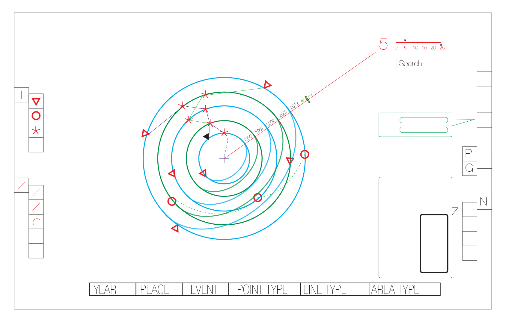
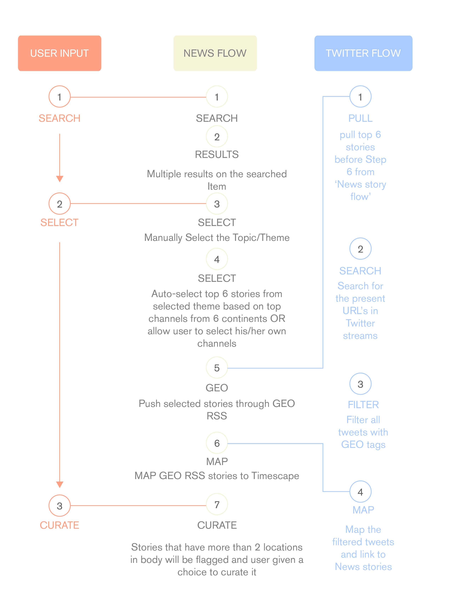
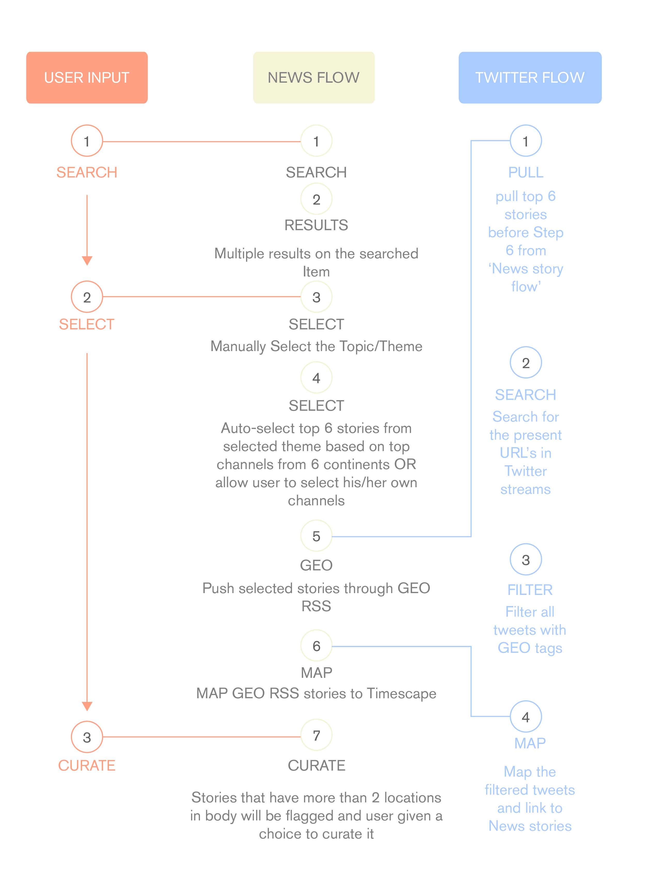

Timescape
In 2012, right after my undergraduate education, joined Dplaylab as a junior designer, to design & develop a data visualization product called Timescape.
Timescape is an online platform designed to visualize streams of information in order to build and present narratives in a highly dynamic and visual manner.
Timescape was conceptualized as a 3Dimensional visualization tool, which has a database of datasets that users can plot in a Globe. Users can also upload their own private/public datasets. The information is visualized based on a time vs proximity plot on an onion-shelled globe where various layers/shells represent timeframes.
At the beta level, Timescape was mostly the geo-tagged datasets from social media that were plotted and visualized. But soon it evolved into a platform most suitable for visual story telling. In its current state, Timescape is used as a data science and visualization based interactive storytelling platform.

Initial concept sketch of the product.


 In 3 months, Timescape evolved as a product from a webGL globe to a data visualization platform.
In 3 months, Timescape evolved as a product from a webGL globe to a data visualization platform.
 The relevant information was sourced from various databases along with their Geographical data and was plotted on the globe according to its chronology.

The narrative interaction levels.
The relevant information was sourced from various databases along with their Geographical data and was plotted on the globe according to its chronology.

The narrative interaction levels.
 The information architecture of Timescape beta.
The information architecture of Timescape beta.
 The beta version of Timescape was used to plot news, social network feeds, private DATA.
The beta version of Timescape was used to plot news, social network feeds, private DATA.